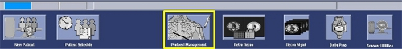
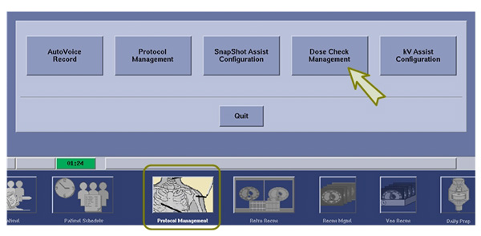
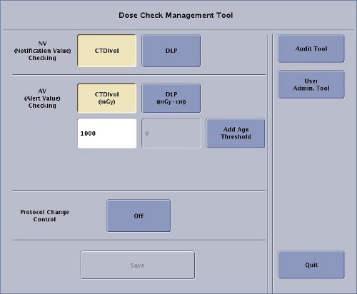
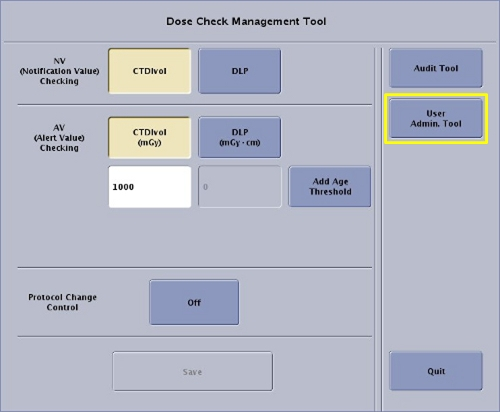

Operating Documentation
Direction 5193574-800, Rev# 22
LightSpeed 7.X Service Methods
Module Version 2.0, Version Date 7/24/13
Operating Documentation |
| Last Revised: | 19 March 2013 |
The Dose Check feature intends to notify and alert the operating personnel that prepare and set the scan parameters, prior to starting a scan, whether the estimated dose index is above the value defined and set by the operating group, practice, or institution to warrant notification to the operator. The Dose Check feature is designed to comply with the NEMA XR-25 standard.
| ||||
| The following instructions are meant for Service Personal and
define the extent of involvement by Service Personal in the configuration
and check out of the Dose Check Management and EA3 features. Service Activity Shall Not Include:
Service Activity Shall Include:
| ||||
Use the following instructions to confirm the presence of Dose Check Management Utility and its User Interface:
Click on the [Protocol Management] Icon on the Display Monitor.
Illustration 1: Protocol Management Icon

The Protocol Management Pop-up Window will open, confirm that [Dose Check Management] is one of the buttons displayed in this window.
Illustration 2: Protocol Management Pop-up Window

Click On the [Dose Check Manager] Button.
Confirm the Dose Check Management User Interface opens.
Illustration 3: Dose Check Management User Interface (Default Configuration Shown)

Click on [Quit] to exit the Dose Check Management User Interface.
Click on [Quit] in the Protocol Management Pop-up Window to exit the Protocol Management.
Service assistance is required for initial setup of User Accounts using EA3 Admin Browser. Until an Administrator Account is created, the Root User credentials (Username and Password) will be required. The following instructions are for creating an Administrator Account local on the system. The EA3 Admin Browser also supports the use of Enterprise Directory Server (i.e. MSAD, Novell, etc.) for importing User Account maintained elsewhere by the Customer.
| NOTE: | A detailed explanation and instructions on configuring Local and Enterprise User Accounts for the system using the EA3 Admin Browser Utility can be found in the System’s User or Learning and Reference Guide Manuals. The EA3 Admin Browser Utility is the tool used for configuring User Accounts. |
| NOTE: | If Data Privacy feature has been enabled and configured, the Administrator User account may already have been created. If Data Privacy has not been enabled, an Administrator Account still must be created to support the Dose Check Management. |
Access the EA3 Admin Browser Utility for creating an Local Administrator Account on the system using the following processes:
Click the [Service] Icon on the Display Monitor, and the Common Service Desktop (CSD) will appear.
Select the [Configuration] Tab on the CSD and find the Configure EA3 selection in the menu.
Illustration 4: Common Service Desktop, Configuration Tab - Configure EA3

| NOTE: | Alternatively, EA3 Admin Browser can be launched (accessed)
from the Dose Check Management Tool. Illustration 5: Dose Check Management Tool , User Admin Tool - EA3 Admin Browser Access  |
Click on the EA3 Admin Browser Menu item in the [CSD] or Click on [User Admin Tool] from the Dose Check Management Tool, and the EA3 Administration Logon Screen will appear.
Illustration 6: EA3 Administration Logon Screen

Logon to the EA3 Admin Browser Utility by entering the Root Logon credentials in the EA3 Administration Logon Screen.
Type: root for Username.
Type root password and click [Login].
The EA3 Admin Browser will appear.
Select Application Tab on the EA3 Admin Browser.
Illustration 7: EA3 Admin Browser, Application Tab - Enable Authorization Selection

If Data Privacy (HIPAA) is not enable in the System Configuration “reconfig”, make certain that the follow options are set as follows.
Enable Authorization shall be deselected
Inactivity Timeout (Minutes) shall be set to 0
| NOTE: | If Inactivity Timeout (Minutes) is set to any value other than zero, User Login Screen will appear on System Bootup. |
Select the Local Users Tab on the EA3 Admin Browser.
Illustration 8: EA3 Admin Browser - Local Users Page

Click [Add Local User], and Add User pop-up window will appear.
Illustration 9: EA3 Admin Browser - Add Local User Button

Enter User Information in the Add User pop-up window, then click [Add User].
Illustration 10: Add User Pop-up Window

| NOTE: | This User will be assigned EA3 Administrator role/permissions, for the purpose of managing all additional Users. Add Administrator User ID and Password supplied by Customer. |
With the new User selected, click [Add To Group] button, and the Add Membership for User pop-up window will appear.
Illustration 11: EA3 Admin Browser - Add To Group Button

Select Administrator role and click the [Add Membership] button.
Illustration 12: Add Membership for User Pop-up Window

| NOTE: | This User may all be assigned Dose Check Administrator (DC Administrator) role in addition to Administrator role. |
Click [Apply Configuration] button on the Local User Page.
Illustration 13: EA3 Admin Browser, Local User Page - Apply Configuration

Logout and of EA3 Adminstrator Browser, by clicking on the [Logout] button.
Again select EA3 Admin browser from the CSD menu or the Dose Check Management Tool, this time logon using the Administrator Account credentials.
Turn over system to the Customer for creation of additional EA3 User Accounts and their group membership (roles).
| NOTE: | Once an Administrator User Account is created, the use of the Root User Account will no longer be required. |
The last tab on the EA3 Admin Browser is the Enterprise tab. On this tab, you can configure the properties necessary to make a connection to an Enterprise directory server (i.e. MSAD, Novell, etc.). The Enterprise Tab is used by the site’s IT (Information Technology) and/or GE Service personnel. It provides connectivity to the site’s remote user database. If you do not have a network established in your hospital or clinic, this tab will not be used. Be prepared to assist the Customer with configuring the system to use the Enterprise Server feature. A detailed explanation and instructions on configuring the Enterprise Tab can be found in the System’s User or Learning and Reference Guide Manuals.
EA3 User Account information is backed up in System State. Make certain a current System State is saved after EA3 activities have been completed.
| NOTE: | Failure to back up this information to System State will require manual reentry of all EA3 configuration data or partial data if changes were performed to User Accounts since the last System State was saved. |